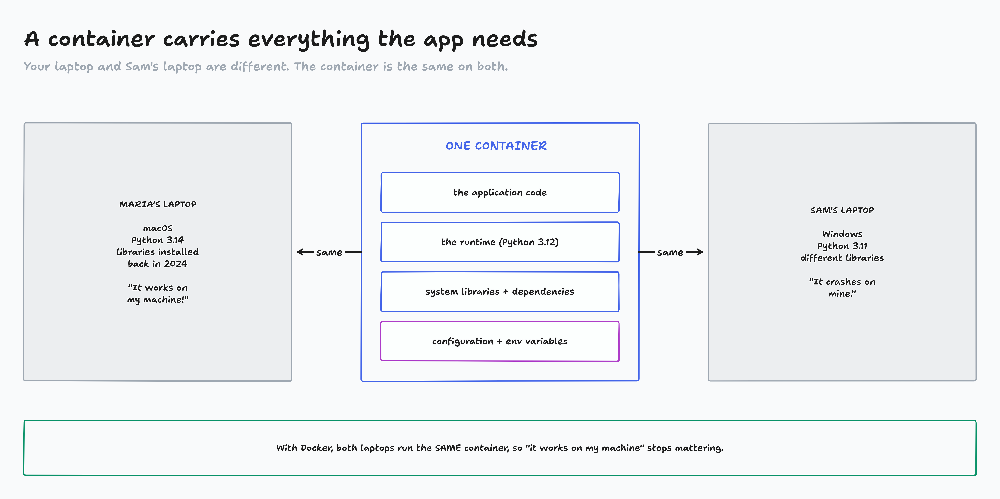
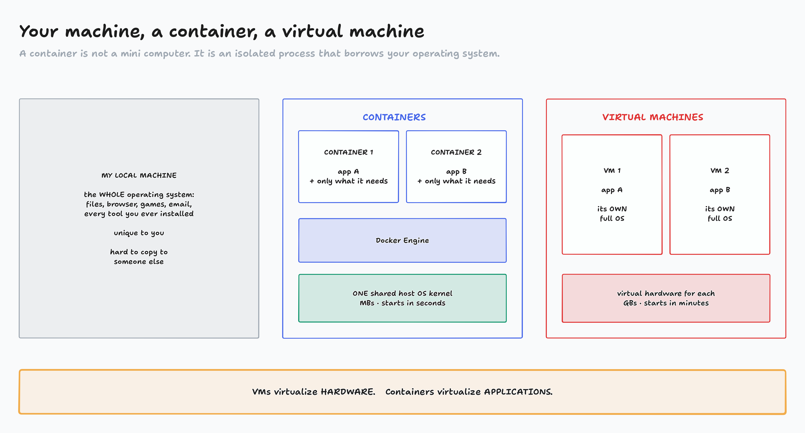
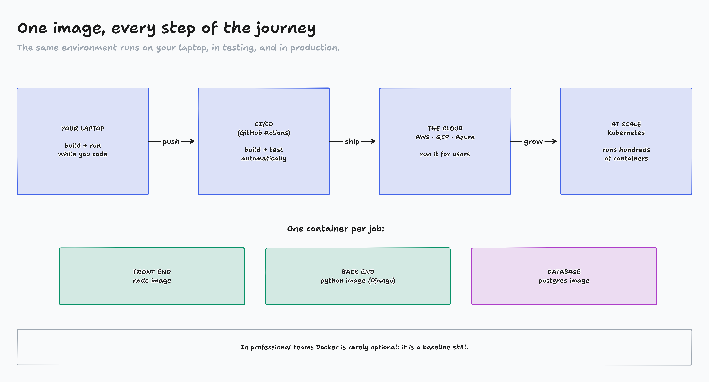
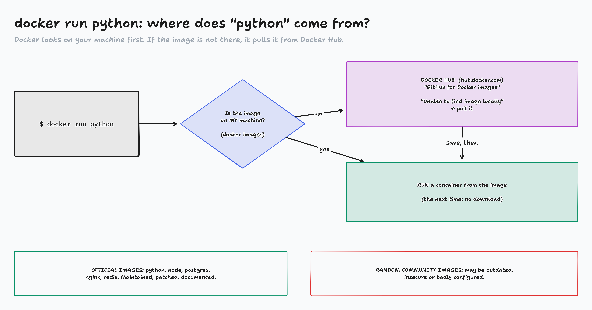

Fundamentals · Docker · Part 1 of 2
Introduction to Docker
Why does code that works on one laptop crash on another, and how do containers fix it? Laptops open: today is hands-on.
Before class (demo-kit/RUNBOOK.md): Docker Desktop running, docker version shows a Server section. Pre-pull alpine, hello-world, python:3.12-slim, python:3.12-alpine with demo-kit/pre-pull.sh.
Tabs: this deck, Terminal Lab 1 page, the activity page, hub.docker.com/_/python . Terminal font big (Cmd/Ctrl +).
Say: "Everyone open a terminal now. You'll type along all lecture. The lab page on the class site has every command with a Copy button." Press T .
"It works on my machine"
Type python3 --version (Windows: python --version)
Paste the answer in chat
Same class, same lesson… how many different answers?
Every laptop is different. Docker makes the environment the same everywhere.
** LIVE, 2 minutes. ** Run it in your own terminal first. (Instructor laptop answered Python 3.14.7 in the dry run.)
Read out the spread from chat: 3.11, 3.12, 3.13, "command not found"… "If we all ran the same Python project, some of us would crash. That's the problem Docker solves."
Keep it light: nobody's version is "wrong".

diagrams/DK1-01-whats-inside.tldr
"Docker is a platform that packages an app and everything it needs into a standard unit: a container ."
A container holds: the code , the runtime (Python, Node), the libraries , the configuration .
Maria and Sam don't have to match each other. They both just run the container.
Containers are created, run and deleted by Docker only.
Curriculum's key idea: "Docker makes 'it works on my machine' irrelevant."
Why was Docker created?
Before Docker
Different OS versions across the team
Different dependency versions
Long setup instructions
Production behaves differently from your laptop
= time and money spent on environment bugs, fragile deploys, slow onboarding
With Docker
The environment is written as code
A new teammate gets it in seconds
It's portable : the same on every laptop and on the server
Docker turns "set up your machine" into "run this one thing".
Ask chat: "Who has lost an hour (or a day) to installing something?" Lots of hands.
"Environment as code": you'll write that code, a Dockerfile, in Lecture 2.

diagrams/DK1-02-machine-container-vm.tldr
Your machine: the OS manages your entire computer, not just one project. Unique to you.A container: lives inside your machine, inside the Docker background service. Only what one task needs, with pinned versions. Faster because it carries less.A VM (you may know WSL on Windows): a whole pretend computer with its own OS.
Key mental model, word for word: "A Docker container is a minimal, disposable environment created and run by Docker to execute a specific task using the host machine's operating system."
Instructor note: 2 apps = 2 containers. Container 1 and container 2 are separate containers, one app each. Starting two is just two docker run commands. No Docker Compose needed. Compose only makes it easier to start several containers together and let them talk to each other (a future lecture). The blue outline is the "containers" column, not one big container.
If asked about Mac/Windows: Docker Desktop quietly runs one small Linux VM, and all containers share its kernel. Still one kernel for all containers.
Containers are isolated processes, not mini computers
Containers Virtual machines OS share the host OS kernel each has its own OS Size lightweight (MBs) heavy (GBs) Startup seconds or less minutes Resources low high Portability very high moderate
VMs virtualize hardware. Containers virtualize applications.
Don't go deep: the curriculum says "we aren't going to go much into detail". 1 minute.
"In two minutes you'll prove the 'isolated process' part yourself."
YOUR TERMINAL · Lab step 1
Is Docker working?
$ docker version
Client: …
Version: 29.x
Server: … ← the Docker Engine
Engine:
Version: 29.x
$ docker run hello-world
Unable to find image 'hello-world:latest' locally
latest: Pulling from library/hello-world
…
Hello from Docker!
This message shows that your installation
appears to be working correctly.
Look for
Client = the docker command you type
Server = the Docker Engine, the background service that runs containers
No Server section?
"Cannot connect to the Docker daemon" → open Docker Desktop and wait for it to say running.
Every command is on the class site: Terminal Lab 1, with Copy buttons.
** HANDS-ON, about 3 minutes. ** Type it on your screen first, then "your turn". Thumbs up in chat when you see "Hello from Docker!".
docker version = the curriculum's install check. Point at Client and Server .docker run hello-world: read Docker's own 4 steps aloud ("The Docker client contacted the Docker daemon… pulled the image from the Docker Hub… created a new container… streamed that output"). That's the whole lecture in 4 lines."Unable to find image locally" is not an error : it downloads it. Remember it for slide 11.
Stuck students: don't fix installs live. "Watch my screen, and do Lab step 1 after class; the lab page has a 'When something breaks' table." Common: Docker Desktop not open; Windows needs WSL 2; Linux needs sudo or the docker group.
YOUR TERMINAL · Lab step 2
Step inside a container
$ docker run --rm alpine cat /etc/os-release
NAME="Alpine Linux"
VERSION_ID=3.24.2 ← not your OS!
$ docker run -it --rm alpine sh
/ # whoami
root
/ # ls /
bin dev etc home lib … usr var
/ # ps
PID USER TIME COMMAND
1 root 0:00 sh
7 root 0:00 ps
/ # exit
What you just saw
A tiny Linux (Alpine, about 8 MB) on your laptop
ps: only 2 processes. Your laptop runs hundreds. That's isolation.
-it = let me type into it
--rm = delete it when I exit
A container is an isolated process, not a mini computer.
** HANDS-ON, about 4 minutes. **
First command: Alpine Linux, even on a Mac or Windows laptop. (Dry run host: Fedora. Inside: Alpine 3.24.2. Their version number may differ a little.)
Second: the prompt changes to / #: "You're inside." whoami = root, but only root of this little box.
ps: PID 1 is sh, the command we started. "The container IS that process. When it ends, the container stops."exit, then show docker ps -a is empty for alpine: --rm cleaned it up. (Lecture 2 is all about cleaning up.)
Windows Git Bash may say "the input device is not a TTY": run it as winpty docker run -it --rm alpine sh, or use PowerShell.

diagrams/DK1-03-modern-stack.tldr
Four habits of a good container
1 · SMALL builds faster, more secure, fewer dependencies = fewer problems
2 · ONE JOB one app or service per container, never "everything in one"
3 · DISPOSABLE easy to destroy and recreate; don't rely on what's inside it
4 · CONFIGURED environment variables, not hard-coded values
If rebuilding your container is painful, your Docker setup needs improvement.
Small: you'll see real sizes in 10 minutes (8 MB vs 1 GB).One job: the picture before: front end, back end, database = 3 containers.Disposable: we already did it: --rm threw the Alpine container away.Configured: passwords and URLs come from env variables. Homework Task 3 uses one.
These four are the activity's answers, so say them clearly.

diagrams/DK1-04-docker-hub.tldr
"Docker doesn't magically know what 'python' is." Callback: hello-world said "Unable to find image locally" → pulled it. Run it again: no download.
Docker Hub = GitHub for Docker images; a marketplace of prebuilt environments; Docker's default source."Without Docker Hub, every developer would build every image from scratch."
Official images : maintained by Docker or the software's own team, security updates, clear docs. "Always start with an official image unless you have a very specific reason not to."
Don't type plain docker run python on class Wi-Fi: it pulls 1.1 GB and then prints nothing (no -it, so Python exits at once). We'll use a smaller tag.
Reading an image page: hub.docker.com/_/python
Look for
Official Image badge
Tags = versions: 3.12 · 3.12-slim · 3.12-alpine
Docs : how it's meant to be used
Size : alpine is smallest · slim is the usual pick (pip packages just work)
Pull command : docker pull python:3.12-slim
latest ≠ stablelatest just means "newest tag". Tomorrow it can be a different version.
Pin the version: FROM python:3.12-slim, not FROM python
Start the downloads now
$ docker pull python:3.12-slim
$ docker pull python:3.12-alpine
** LIVE, 2 minutes. ** Browser: hub.docker.com/_/python . Point at: Docker Official Image badge → the Tags tab → 3.12-slim and 3.12-alpine → the compressed size column → the pull command with its copy button.
Instructor note: sizes. Alpine is smaller than slim. Hub shows the compressed download (slim ~43 MB, alpine ~17 MB). docker images on slide 14 shows the unpacked size (slim 119 MB, alpine ~55 MB). Why slim anyway: alpine uses a different C library (musl), so many pip install packages must compile or fail there. Slim = a bit bigger, but things just work.
"Engineers spend far more time choosing and configuring existing images than creating new ones."
Then: "Paste both pull commands now. They download while we do the activity." (About 60 MB to download together. If Wi-Fi is slow, alpine alone is ~17 MB.) Go straight to the activity.
Activity: Habit or trap?
A Docker decision appears (Maria and Sam's team)
In chat on "go": HABIT or TRAP
Then: which of the four habits, or which slide, says so?
Page: activity-habit-or-trap/ · your pulls keep downloading meanwhile
About 30 seconds a card; the first 6 are the core set. Space reveals; click the button chat voted for most to show right/wrong.
Card 7 is the sizes we'll see next (slim 119 MB vs full 1.11 GB). Card 10 is a bonus.
Answers are also in your Notes ("Docker Lectures - Teacher Guide").
YOUR TERMINAL · Lab steps 3 + 4
Same image, same Python, on every laptop
$ docker images
IMAGE ID DISK USAGE
alpine:latest 320994c3b997 8.42MB
python:3.12 720762d97dcd 1.11GB ← instructor
python:3.12-alpine 979e5a8a5684 55.2MB
python:3.12-slim df18428df8a0 119MB
$ docker run --rm python:3.12-slim python --version
Python 3.12.15 ← everyone gets this
$ docker run -it --rm python:3.12-slim python
>>> print("hello from a container")
>>> exit()
Compare
Your laptop: whatever you pasted in chat at the start
The container: Python 3.12.15 for everyone in the room
Full image 1.11 GB vs slim 119 MB vs alpine 55 MB : same Python, 20× smaller
Nobody installed Python 3.12. Docker pulled an environment and ran it.
** HANDS-ON, about 4 minutes. **
docker images lists what's on your machine. Only the instructor has python:3.12 (pre-pulled, so we didn't all download 1 GB).Older Docker prints REPOSITORY TAG IMAGE ID CREATED SIZE instead. Same information. Sizes on an M-series Mac differ a little.python --version inside: everyone gets the same answer. Compare with the chat at minute 1. That's "it works on my machine" solved.The REPL: a real Python 3.12, nothing installed on the laptop. exit() → --rm deletes the container.
Pull still running? They can watch yours, and do Lab steps 3–4 after class.
What you now know
A container packages code + runtime + libraries + config, so it runs the same everywhere
Containers share the host's kernel : isolated processes, MBs, seconds. VMs: own OS, GBs, minutes
Docker Hub is where images come from. Start from official images and pin the tag Good containers are small , have one job , are disposable , and use env variables
You ran: docker version · docker run · docker pull · docker images · -it · --rm
Next lecture: you write the recipe (a Dockerfile), build your own image, and clean up after it.
"The most important takeaway isn't the commands, it's the mental model: a minimal, disposable environment that borrows your OS."
Homework, Part I
Priority 1, Terminal Lab 1: every step on your own laptop, until python --version in a container says 3.12Priority 2, Docker Hub tour: the node official image. Find its tags, a slim or alpine size, and its pull command. Run node --version in itPriority 3, FreeCodeCamp: 50 steps of your current certification
Come to Lecture 2 ready
docker run --rm hello-world must work. Lecture 2 is building your own images, all in the terminal.
Full steps are on the class site (Homework Part I). The Docker Fundamentals assignment comes after Lecture 2.